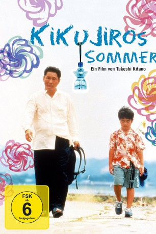

#7496 Kikujiros Sommer
Alternativ: Kikujiro (Englischer Titel)
 
 IMDB-Wertung: 7.9 / 10
IMDB-Wertung: 7.9 / 10  Metascore: 0
Metascore: 0 
Ein kleiner Junge lebt allein mit seiner Großmutter in Tokio, da seine Mutter am anderen Ende von Japan im Norden wohnt. Als die Sommerferien beginnen, findet er sich allein und ohne seine Freunde in der Stadt wieder. Er langweilt sich furchtbar und beschließt, auf eigene Faust seine Mutter zu besuchen. Er kommt nicht weit, denn eine Gruppe älterer Jungs erpressen sein Reisegeld. Zur Hilfe kommt ihm ein Kleinganove mit seiner Frau. Gerührt vom Schicksal des Jungen, schickt die Frau ihren nutzlosen Ehemann los, um den Jungen zu seiner Mutter zu bringen. Nach einem kurzen Zwischenaufenthalt auf der Rennbahn, wo ein Großteil der Reisekasse verschwindet, begeben sich die beiden per Anhalter auf die beschwerliche Reise gen Norden. (Text: moviepilot.de)
Jahr: 1999
Dauer: 121 Minuten
FSK: 12
Land: Japan Studio: Senator FilmTonspuren: DTS - ,
Untertitel: Deutsch,
Auflösung: 1080p (1920x1040) Größe: 10076 MB
Genre: Drama, Komödie
Regisseur:  Takeshi Kitano
Takeshi Kitano
Drehbuch: Takeshi Kitano
Soundtrack:
Darsteller:
 Takeshi Kitano als Kikujiro
Takeshi Kitano als Kikujiro- Rakkyo Ide als Biker's Friend
- Yûko Daike als Masao's Mother
- Yusuke Sekiguchi als Masao
- Kayoko Kishimoto als Kikujiro's Wife
- The Great Gidayû als Biker
 Akaji Maro als Crazy Man
Akaji Maro als Crazy Man- Fumie Hosokawa als Juggler Girl
- Nezumi Imamura als An-chan
- Bîto Kiyoshi als Man at Bus Stop
- Daigaku Sekine als Yakuza Boss
- Yôji Tanaka als Yakuza Henchman
- Makoto Inamiya als Yakuza Henchman
- Hisahiko Murasawa als Yakuza Henchman
- Tarou Suwata als Stall-keeper
- Hidehisa Ebata als Stall-keeper
- Kanako Kojima als Hostess
- Kyoko Nagata als Hostess
- Shimie Komura als Hostess
- Fuyu Ooba als Hostess
- Chiyuki Matsumoto als Hostess
- Yuko Yasui als Hostess
- Kenta Arai als Masao's Friend
- Kazuko Yoshiyuki als Masao's Grandmother
- Shinobu Hosokawa als Kind Woman , uncredited
- Takeshi Ohnishi als Truck Driver , uncredited
- Naoto Seshimo als Tap Dancing Barista , uncredited
- Kuniharu Tokunaga als Groundkeeper , uncredited
- Yoshiyuki Ukon als Hotel Manager , uncredited
Datei: X:\HD-Eastern-Modern(A-M)\Kikujiros Sommer (1999, FSK12, 1920x1040).mkv seit 15.11.2017
Festplatte: HD Eastern+Western
 Es gibt insgesamt 104 Filme in der Gruppe 'HD-Eastern-Modern(A-M)'
Es gibt insgesamt 104 Filme in der Gruppe 'HD-Eastern-Modern(A-M)'